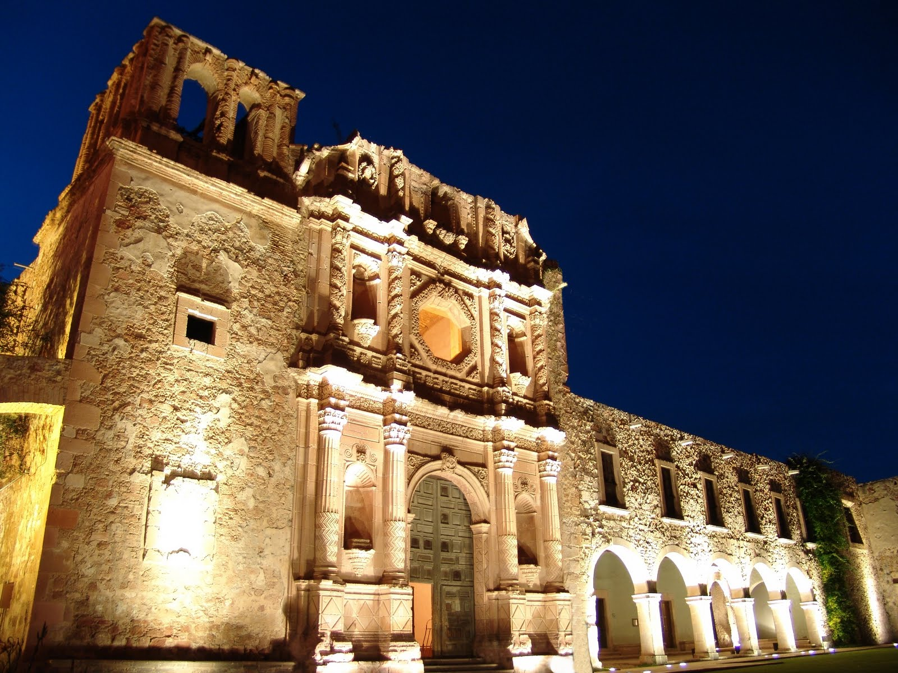

La Mina el Edén como tal, abrió sus puertas el 1 de Enero de 1975, ofreciendo un recorrido por su interior.
Con una impactante estructura natural, El Edén ofrece un espacio cultural y recreativo. Su museo fue inaugurado en 1975 y cuenta con puentes suspendidos, escaleras e iluminación especial. En una de las salas se muestra una vasta colección de rocas y minerales de la región.

Zacatecas
En un edificio que se construyó en 1948 como la Residencia Oficial de los Gobernadores, tras una remodelación pasó a ser museo en 1978 teniendo como objetivo primordial dar a conocer la obra de famosos artistas zacatecanos. Con más de 170 obras de artistas de la talla de Rafael Coronel, Manuel Felguérez, Francisco Goitia, Julio Ruelas y más, el lugar ha cumplido con su objetivo. Disfruta también los bellos jardines que se encuentran alrededor.

Cerro de la bufa
Zacatecas

Una representación muy valiosa de la arquitectura churrigueresca mexicana, fue edificada por mineros durante el siglo XVII y es sin duda la obra religiosa más representativa de la ciudad adquiriendo el título de catedral en 1862. El inmueble está labrado en la típica cantera rosa de la zona y su fachada principal cuenta con tres cuerpos sostenidos por un trío de columnas con una cruz como remate. En total son 2,394 metros cuadrados de belleza.

Esta zona es famosa por su riqueza artesanal elaborada en gran parte por los huicholes. En la Casa de las Artesanías podrás admirar y adquirir todo tipo de objetos de alfarería, cartonería, madera, metalistería, platería, talabartería, textiles y mucho más. El lugar también cuenta con muebles y artesanía sacra, haciendo que tu visita valga realmente la pena porque aunque puedes comprar cualquier objeto, a veces basta con sólo admirarlos.

Si estás en Zacatecas no te puedes perder una tradicional callejoneada; pues visitarás calles y callejones siguiendo al tamborazo, un conjunto musical que anima con bailes. Encabezando este animado recorrido un burrito carga barricas de mezcal para que tú, de tu jarrito colgado al cuello, puedas deleitarte con esta bebida.

En las fondas (versión más informal y económica de los restaurantes) encontrarás birria, un caldo preparado con carne de borrego, chiles, jitomate, cebolla, pimienta, ajo, mejorana y orégano. Otro caldo muy solicitado es el pozole rojo, el cual se prepara con una variedad especial de maíz (cacahuazintle), chile rojo y carne de cerdo. Las gorditas son tortillas muy gruesas y rellenas de distintos guisados. Se acostumbra comerlas como “antojito”, es decir, para “matar el hambre”.

Centro Historíco
La ciudad de Zacatecas se fundó en 1546, poco después del descubrimiento de un rico filón de plata, y prosperó gracias a la explotación de este metal precioso, alcanzando su apogeo en los siglos XVI y XVII. Edificada en la escarpada ladera de un estrecho valle, el panorama que ofrece es de una belleza impresionante. Conserva numerosos edificios antiguos, tanto religiosos como civiles, dominados por la silueta de la catedral, construida entre 1730 y 1760.

MUSEO RAFAEL CORONEL
Por dos motivos no te podrás perder este museo: en primer lugar se encuentra en lo que fue el Convento de San Francisco, primero de su tipo en esta provincia; en segundo lugar porque contiene una excelente colección de arte popular mexicano. Lo que le ha dado fama al museo son las más de 10 mil máscaras mexicanas usadas en ritos y tradiciones en todo el país. Y encontrarás obras de famosos de la talla de Diego Rivera y Rafael Coronel.

La capital de Zacatecas, “una ciudad con rostro de piedra y corazón de plata”, reina sobre las planicies barridas por el viento. Esta legendaria urbe platera se localiza cuatro horas y media al norte de Guanajuato, y ofrece un verdadero recorrido por la historia nacional.
Con una altitud de 2 mil 460 metros (es la segunda ciudad más alta del país), Zacatecas literalmente te dejará sin aliento. Su interés arquitectónico reside en sus abundantes edificios religiosos y civiles, de los cuales destaca su catedral construida entre 1730 y 1760, misma que domina el panorama del centro histórico.
Zacatecas es una ciudad que activa todos los sentidos. Caminar por sus calles zigzagueantes plenas de historia resulta una experiencia virreinal, haciendo sentirse un auténtico “aristócrata de la plata”. Es un lujo que ni los propios dimensionan.
En Zacatecas siempre habrá algo por qué maravillarse. Las emociones surgen a cada paso y en cada lugar que se visita, pasando del asombro a la admiración y de la emoción a la expectación. Zacatecas se descubre en cada parte visitada. Y para conocerse, no hay guía más creíble que las añosas huellas de los propios vestigios contemplados, que narran silenciosas versiones de épocas de bonanza, cuando por los cauces de los ríos de Zacatecas corría la plata en abundancia. De ahí su temprano reconocimiento por parte de la corona, que le confiere a finales del siglo XVI título de ciudad y escudo de armas.
Esto, tal vez en agradecimiento también, a que fue la gran "Civilizadora del Norte" y por haber motivado la traza de la importante ruta del Camino Real de Tierra Adentro" que, juntamente con el centro histórico de la ciudad, son hoy día "Patrimonio Mundial".
La vocación minera del pueblo zacatecano mantenía a una gran parte de la población ocupada en esta actividad económica. Para trabajar en la minas es necesario trabajar en parejas, donde uno de los mineros pica la piedra y el otro lleva la barreta. Los sábados, al término de las largas jornadas de trabajo, los barreteros salían en busca de amigos y familiares para tomar mezcal y reproducir los ruidos hechos con sus herramientas en la mina al estilo del tamborazo. Estas celebraciones improvisadas solían durar toda la noche y las mujeres del pueblo eran instruidas en pasar a recoger a sus maridos a la cárcel la mañana siguiente en caso de no haber llegado antes al hogar.
Hoy en día, un grupo de 8 o 10 músicos entona la Marcha Zacatecana para comenzar el recorrido por los callejones de la ciudad, tomándose algún descanso de vez en cuando para repartir mezcal de Huitzila a todos los que les acompañan.


En cuanto al arte de la gastronomía, la cocina zacatecana heredó el sabor de la cultura mesoamericana que distingue a gran parte del país. El platillo más representativo es el “asado de boda”, nombre que le corresponde por ser el platillo más popular en las bodas zacatecanas. Su exquisito sabor por si solo es motivo de fiesta, pues en él se conjugan una gran variedad de sabores representados en la carne de cerdo, el chile ancho, el chocolate y diversas especies para agregar el toque final.
Al visitar una fonda o un restaurante en Zacatecas, no olvides probar las tradicionales enchiladas zacatecanas o el asado de boda. ¿Un postre? Aquí hallarás dulces en cada rincón. En las cocinas zacatecanas, como en el resto del país, el ingrediente principal es el maíz. Con su harina la gente prepara una gran variedad de platillos, bocadillos e incluso postres. Las enchiladas zacatecanas son tortillas enrolladas, rellenas de carne de cerdo deshebrada y sazonada con salsa de chile poblano. Esta delicia se sirve con cebolla, queso fresco y lechuga. Otro platillo muy tradicional es el asado de bodas que, como su nombre lo indica, se sirve para celebrar las nupcias; se prepara con carne y manteca de cerdo y chiles rojos o negros.
Pero el aspecto que más representativo de la cultura zacatecana tal vez es el de las fiestas regionales. Los zacatecanos se visten de gala y color en numerosas ocasiones durante el año para celebrar fiestas patronales, religiosas, cívicas o personales. En enero se celebra la Fiesta de los Papapquis en Nochistlán y las Fiestas del Niño de las Palomitas en Tacoaleche, Guadalupe. En febrero, como en muchas comunidades mexicanas se celebra la Feria del Carnaval y las Fiestas de la Calendaria. Mientras que en marzo, diversos municipios festejan las Fiestas de San José.
Durante la Semana Santa se celebra el Festival Cultural de Zacatecas en la capital del estado. Y en junio, en Cuauhtémoc, Zacatecas se realizan las festividades de San Pedro y San Pablo. El Festival Zacatecas del Folclor Internacional es organizado en la capital durante el mes de julio de cada año. En el mes siguiente, también en la capital, se festejan los Morismos del Bracho. En Ojocaliente, Zacatecas, la celebración de la Feria de la Tuna y la Uva viste de alegría las calles durante el mes de septiembre. También en este mes se lleva a cabo la famosa Feria Nacional de Zacatecas, con sede en la capital estatal.
En otras comunidades de la entidad, este mes es el elegido para festejar fiestas religiosas como la de la Virgen de la Soledad, la Virgen de la Merced y las fiestas de San Miguel. Las Fiestas de San Juan Bautista en Vetagrande, la Feria Regional de Huanusco, la Feria Regional de Nochistlán en el lugar del mismo nombre, la Feria de Aniversario de Luis Moya, Zacatecas y el Festival Internacional de Teatro de la Calle en la ciudad de Zacatecas alegran los días de octubre. Y para cerrar el año, numerosas ferias regionales son celebradas en las comunidades de Concepción del Oro, Calera de Víctor Rosales, Loreto, Guadalupe, Valparaíso, Villa García, Jalpa, Tabasco y Tepechitlán; mientras que en Fresnillo, sus habitantes disfrutan de las fiestas del Santo Niño de Atocha.

{kind=link}
{kind=link}
{kind=link}
{kind=link}
{kind=link}
{kind=link}
{kind=link}